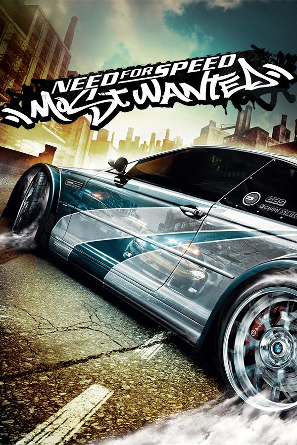

Need for Speed: Most Wanted (2005) is a legendary street racing game developed by EA Black Box. Race through city streets, evade intense police chases, and climb the Blacklist to become the most wanted driver.
Customize your ride, challenge rival racers, and escape from aggressive cops in high-speed pursuits. The game features a dynamic open world, car upgrades, and the iconic Blacklist career mode.
| Component | Minimum | Recommended |
|---|---|---|
| OS | Windows XP/2000 | Windows 10/11 |
| Processor | 1.4 GHz or faster | 3.0 GHz or faster |
| Memory | 256 MB RAM | 1 GB RAM |
| Graphics | 32 MB (Radeon 7500+, GeForce2 MX+) | 256 MB (Radeon 9800+, GeForce 5900+) |
| Storage | 3 GB HDD | 5 GB SSD |
The original game is no longer officially sold, but fan communities offer safe ways to play:
🔽 Download via NFSMods